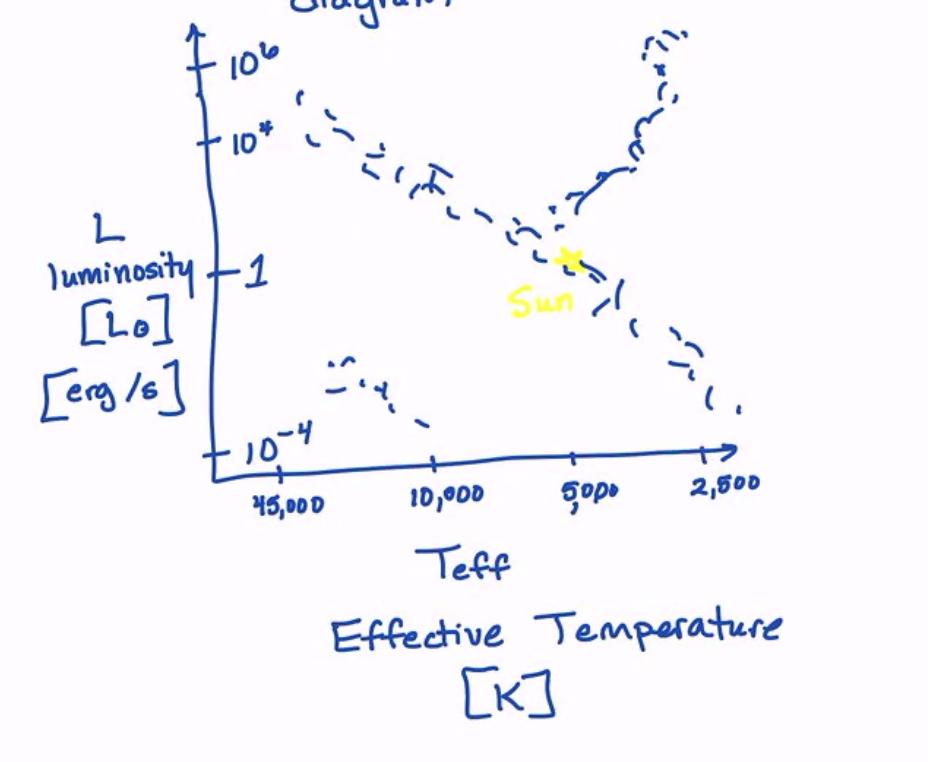
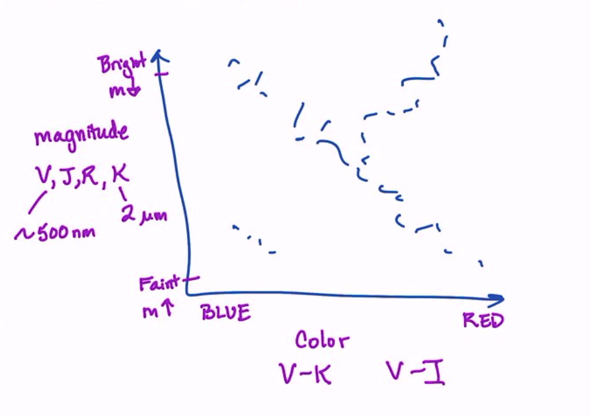
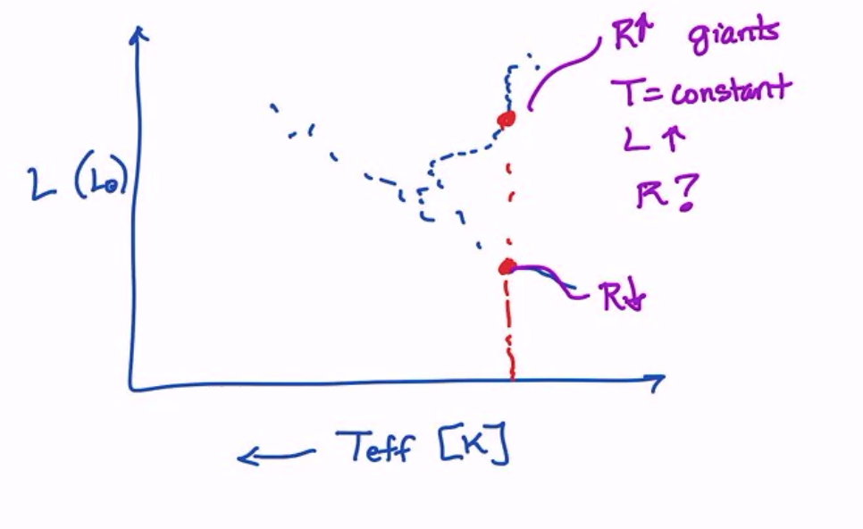
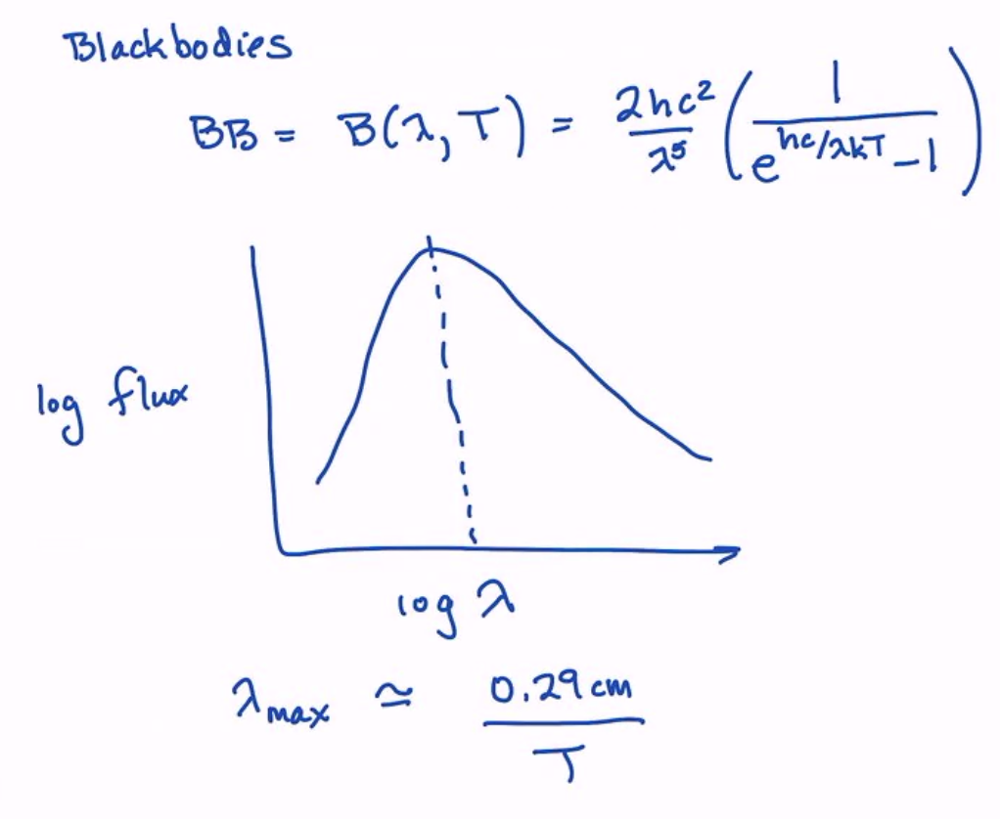
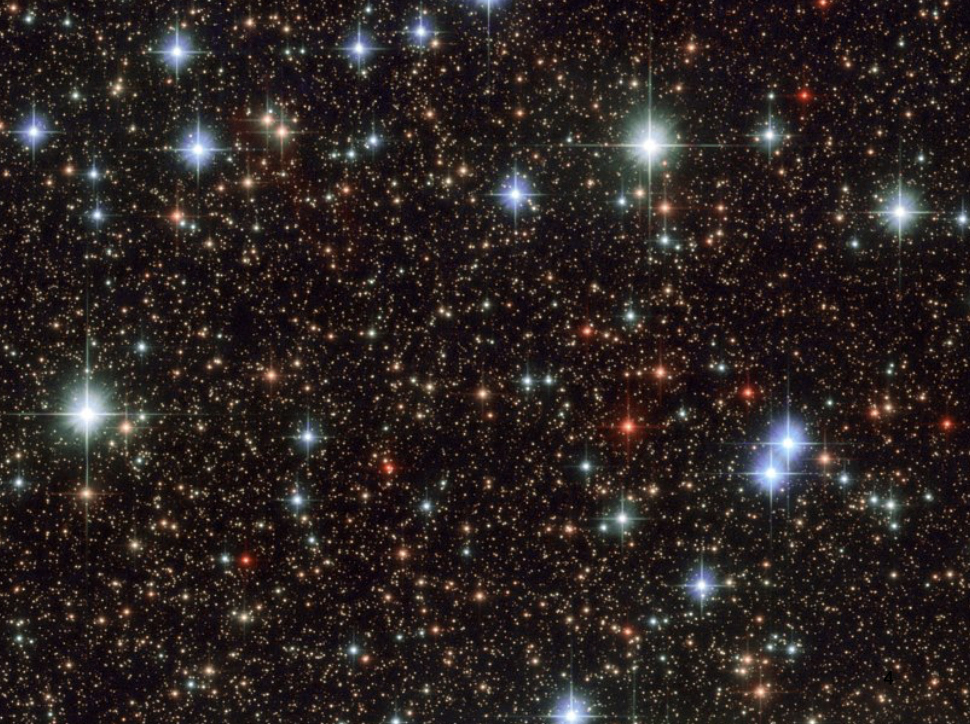
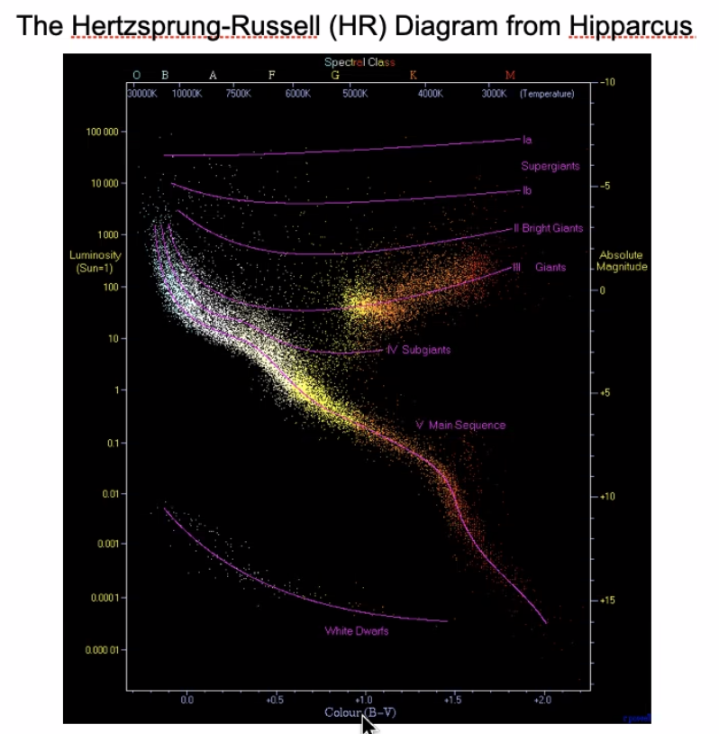
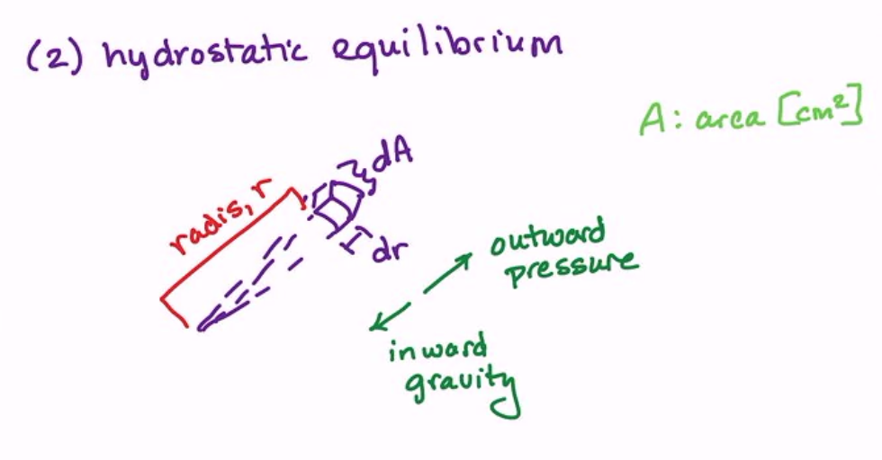
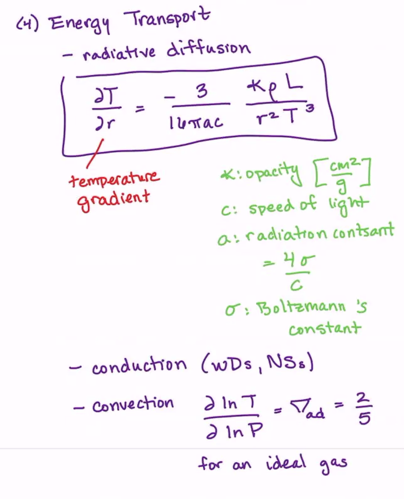

Broad Overview of the Class
Contents
Broad Overview of the Class¶
The Sun¶
We know the most about the nearest star to us – the Sun! We have constant coverage by the SDO at all times in multiple wavelengths. Looking at the data, we notice several things immediately:
Sunspots
Granulations
Surface activity
Variations as a function of wavelength
Temporal variation
So much more!
We want to understand all of this, which is quite complicated. Let’s begin!
HR Diagrams¶
We will refer to almost everything in this class in terms of solar units because we know these values well.
Solar Luminosity: \(L_\odot\)
Solar Mass: \(M_\odot\)
Solar Radius: \(R_\odot\)
How do we place the Sun in context? We begin with observations of nearby stars, leading to the creation of the Hertzprung-Russell (HR) Diagram, consisting of two (seemingly) simple measurements: the luminosity (units of \(L_\odot\) or erg/s) and the “effective” temperature (units of K), where we talk about what this means later.
Stars generally range luminosities from \(10^{-4} L_\odot\) to \(10^{6} L_\odot\), and span tempeartures from \(45,000\) K to \(2,500\) K, with the Sun at roughly \(5000 K\). Plotting more stars, we begin to see some structure:
{kind=link}
The main sequence is the band through the middle. This banding structure arises because we are burning hydrogen to helium in the core.
We also see another band branching off the main sequence, jutting toward high \(L\) and low \(T\). This is the red giant branch.
The last blob of stars, which are extremely hot but faint. These are in fact white dwarf or neutron stars. ‘
Early astronomers were using these measurements to infer the interior of stars (stars are optically thick).
Creating HR Diagrams and CMDs (an aside…)¶
One useful thing to talk about is how we even create the plot above. Naively, you think it’d be easy, but we are hiding the distance in the luminosity calculation. In the absence of a distance, we often use a color-magntiude diagram which is a proxy for an HR diagram. Instead of luminosity, we measure a magnitude (proxy for brightness) in some band (V, J, R, K, etc.) on the y-axis, and a color (difference of magntiudes) on the x-axis.
You basically get the same pattern in a CMD, but they are easier to make but have more caveats.
{kind=link}
Blackbodies¶
We will quickly review what this means. Note that measuring the luminosity and temperature of a star allow you to calculate a radius through the Stefan-Boltzmann law:
where
\(R\) is the radius of the star
\(L\) is the luminosity
\(\sigma\) is the Stefan-Boltzmann constant
\(T\) is the effective temperature
We immediately see that, for a given temperture, more luminous stars are larger in radius! This shows the power of HR diagrams.
{kind=link}
There is also an equation for the radiation of blackbodies:
which has a peak at:
This is what we will use for \(T\) now, but later we will use individual spectral features to measure the temperature.
{kind=link}
Position of Stars on the HR Diagram¶
Time on the HR diagram is really hard to observe. We can’t observe this directly because the stars are so long-lived.
The HR diagram position, however, is set by two unique quantities (to first order):
Mass
Age
There are other things that subtly move the position around to second order:
Binarity
Unresolved binaries for example
Mass transfer
Metallicity
Mass loss
Can be fairly stochastic and episodic, which itself is dependent on metallicity, environment, and binarity as well
Rotation
Dark matter heating!
More.
A Picture for Inspiration and Discussion¶
What can we say about this picture?
{kind=link}
Where are the red giants?! There are hot blue stars and medium red bright stars at the same time – the hallmark of a mixed-age population.
Turns out this is a globular cluster with a foreground population of bright blue stars.
If we turned this into a CMD, it might look like this:
{kind=link}
Overview of Stellar Structure and the Interiors of Stars¶
Everything we are about to say applies to spherically symmetric stars. This is a good approximation.
Here are four principles we need to look at stars (as a function of radius/pressure):
1. The first principle we have is continuity of mass – by looking at shells, we see that each shell must have conserved mass:
\(M\) is the mass, \(r\) is the radius in the star, and \(\rho\) is the mass density. Does this apply for neutron stars and white dwarves? Not necessarily, because we have mass discontinuity.
{kind=link}
2. The second principle is hydrostatic equilibrium – probably the most important principle to understand.
{kind=link}
If we take a small chunk of our star with area \(\mathrm{d}A\) and thickness \(\mathrm{d}r\) at radius \(r\) from the center of the star, we can equate the outward pressure (hot gas wants to expand, with fainter effects from rotation and others) to the inward gravity: mass \(dm\) feels no acceleration:
3. The third principle we have is energy generation/the energy equation:
\(\epsilon\) is the energy generation rate with units of erg/gram/s and depends on the situation.
{kind=link}
4. The last principle is energy transport. For simplicity, we start with radiative diffusion, but we will also discuss convection later.
{kind=link}
Radiative fusion tells us that radiation heats the star all over, giving a temperature gradient:
where \(\kappa\) is the opacity (absorptivity of the gas) with units of cm\(^{2}\)/g
\(c\) is the speed of light
\(a\) is the radiation constant, where \(a = \frac{4\sigma}{c}\) where \(\sigma\) is the Stefan-Boltzmann constant
We will later discussion conduction (relevant for WDs and NSs) as well as convection (extremely tricky to deal with, but gives a temperature gradient of \(\frac{\partial \ln T}{\partial \ln P} = \nabla_{ad} = \frac{2}{5}\) for an ideal gas).
Relevant Time Scales and Temporal Evolution of Stars¶
There are a few basic timescales that are relevant for stars:
1. Nuclear Timescales (longest timescale): \(t_{nuc} = \frac{0.007 \times 0.1 \times M_{total} c^2}{L}\) , where the pre-factor is the efficiency and 10 percent pre-factor accounts for the core being the onlyt burning part of the star on the MS. We can also turn this into a scaling relation:
Note that going from \(H\) to \(He\) to \(C\) to \(Fe\) burning decreases in efficiency. We can thus calculate things like: \(t_{He, Horizon. Branch} \sim 10^{8} \text{ years}\) .
Note that on the MS, \(L \propto M^{3}\) approximately, giving \(t_{nuc} \sim \frac{1}{M^2}\).
2. Thermal Timescales (Kelvin-Helmholtz Timescale): If nuclear fusion were shut off (only losing energy), how long would it take for the star to radiate away gravitational energy.
This is most relevant for pre-MS evolution since there is no energy generation, and the only energy source is the heat latent inside the gas. Also relevant for white dwarf cooling.
Also relevant when a massive star runs out of fuel. It doesn’t immediately collapse because the thermal heat is still there! The core collapses on the Kelvin-Helmholtz timescale for massive stellar deaths.
3. Dynamical Timescale (shortest of the three): if you were to poke the side of the star, how long does the star take to return to hydrostatic equilibrium/time to adjust the hydrostatic structure.
You can think of this as the time it takes for one side to communicate with the other via pressure waves.
This immediately shows us why hydrostatic equilibrium is a good approximation – it responds extremely quickly to reach equilibrium. The dynamical timescale becomes important when the star collapses faster than its dynamical timescale, or for pulsations.